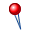
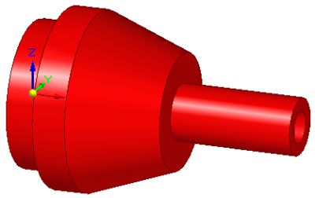
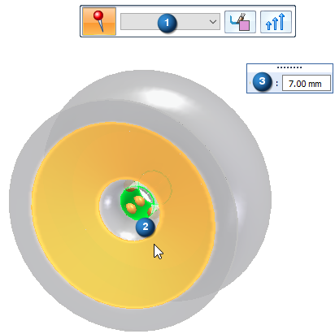
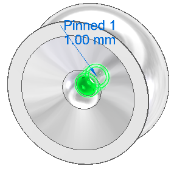

Pinned constraint
Defining degrees of freedom as a boundary condition on selected faces of the design space model in a generative design study is part of the Generative Design workflow.
Use the Generative Design tab→Constraints group→Pinned command

when you want to allow rotation around the axis of a cylindrical or conical face, and to prevent movement in the X, Y, and Z planes.
Functionally, any part that is rotated without it moving in any other direction can be defined by a pinned axis constraint, such as:
-
Axles and tires.
-
A centrifuge to separate out liquids of varying specific gravity, where the axis of revolution is locked during rotation.
-
A door knob. You can define this case using a pinned constraint along with a torque load. The pinned constraint defines the axis of rotation, and the torque magnitude defines when the knob is expected to break.
Alternatively, you can use a pinned constraint with a downward force load to define the point at which the knob breaks.
Applying a pinned constraint
-
Geometry—The cylindrical or conical face on which to apply the constraint.
Note:The axis of the selected geometry is the rotation axis.
-
Offset—Defines a volume on the selected geometry to maintain during optimization. The Offset value that is displayed as a default is the recommended value based on the volume of the design space and the study quality.

Editing pinned constraints
The pinned constraint symbols are added to the selected geometry in the design space, and an edit definition handle is shown on the design space body, with a label such as Pinned 1 and the value you assigned to it. You can use this handle to edit the inputs that created the constraint.

A corresponding entry is added to the Generative Design pane, under the Constraints node, as Pinned 1.
-
To review the values assigned to the constraint, hover over the label name in the Generative Design pane, or click the label to display the handle on the body.
-
To edit the constraint, double-click the label in the Generative Design pane, or click a displayed handle on the body.
How do I
Generative Design workflowGenerative Design example
Suppress individual loads to compare results
Define a physical load condition
Define an operational constraint
Set a maximum displacement
Planar Symmetry
Learn more
Using load casesLook up more details
Fixed constraintGraphic Symbol Size dialog box
Color dialog box